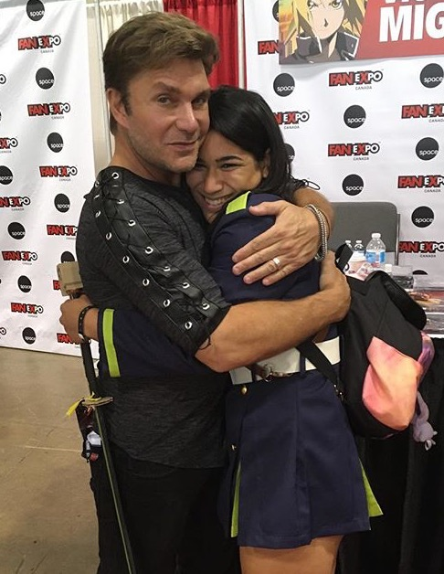
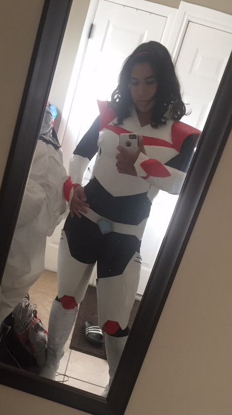
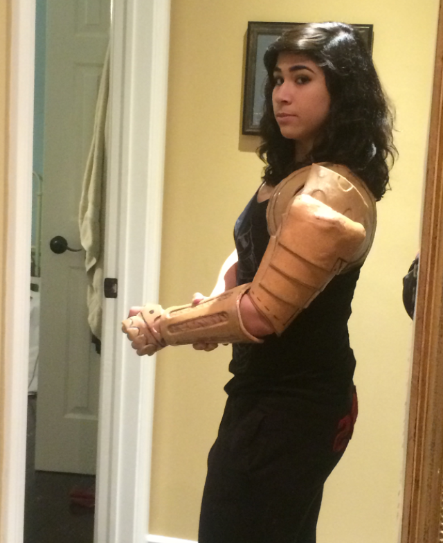
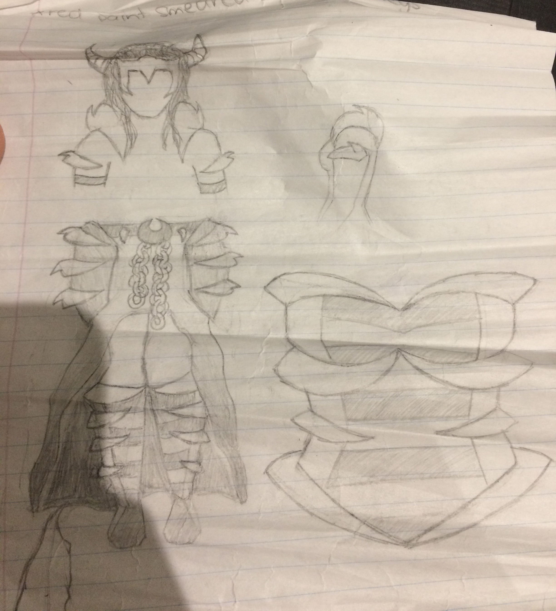

The Art of Cosplay |
||
|---|---|---|
What is Cosplay? |
||
|
Cosplaying is dressing up as a character from a movie, book, tv show, anime, or video game. You can have casual cosplayers, people who only cosplay every year or so, serious cosplayers, people who cosplay at multiple conventions a year, and professional cosplayers, people who get paid to model their cosplays. I fall into the serious cosplayer category, wearing many different outfits at conventions such as Fan Expo, Comic Con, and Fan Days. |
 | |
How I Cosplay |
||
My Cosplay History |
||
|  | After cosplaying for 5 years, I have really improved my cosplay skills. I create most of my cosplays rather than buy them online and I focus more on armour builds than fabric outfits. Cosplays I've done have been...
|
|
After 5 years of learning the tips and tricks of what to do and what not to do when creating a cosplay, I find my costumes improving every year. I've fallen in love with cosplaying and to me it's more than just a hobby. It takes a whole lot of time, tons of hard work, unreal effort, and one annoyed sister to create these masterpieces but the payoff is amazing. |
 | |
My Cos-Plans |
||
|  | I never know how much time I will have to create these cosplays, so every year I make a "cos-plan" which is my list of cosplays that I am planning on making. Unfortunately, I can only do so much and I end up having to make and pass on certain cosplays depending on my time restraint and other limitations. This year I plan to possibly cosplay as...
|
|
To be reminded of who I am and what I’m all about, click here. If you want to learn about my experience with the rising sport that is cup stacking, click here |
||